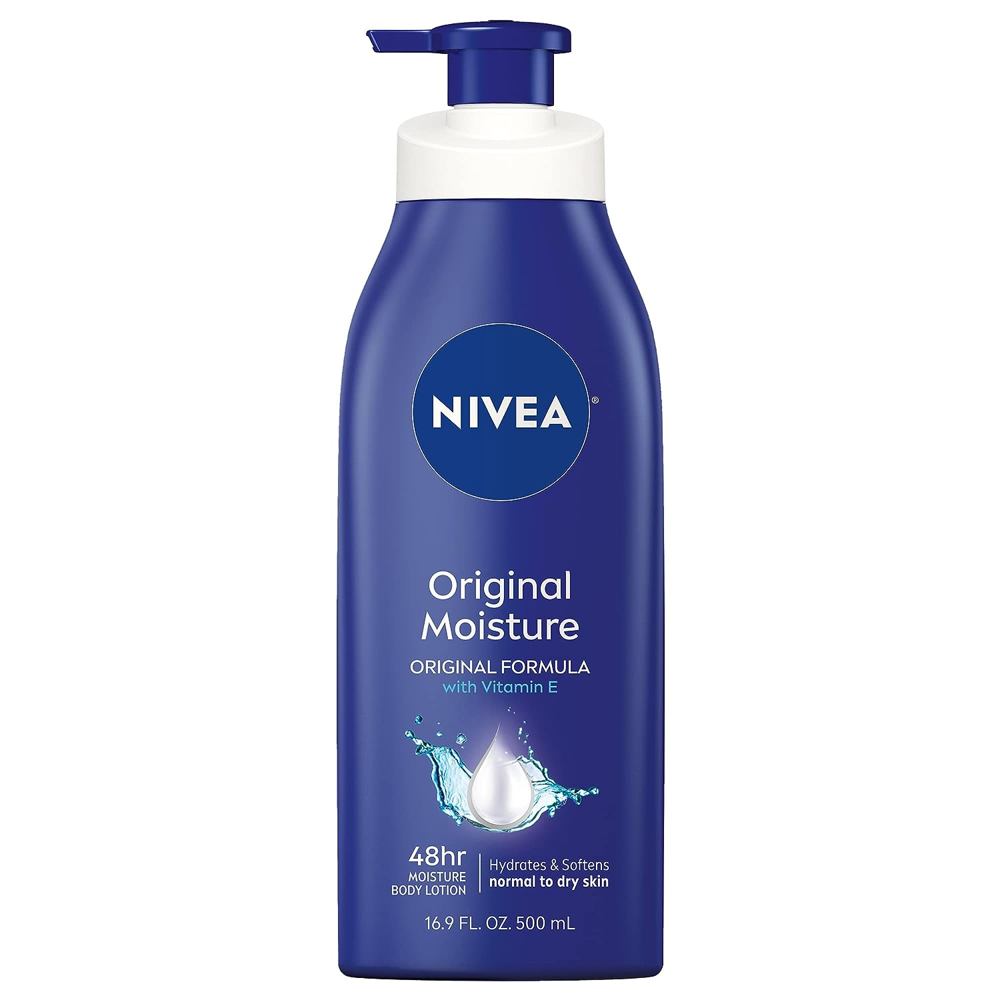
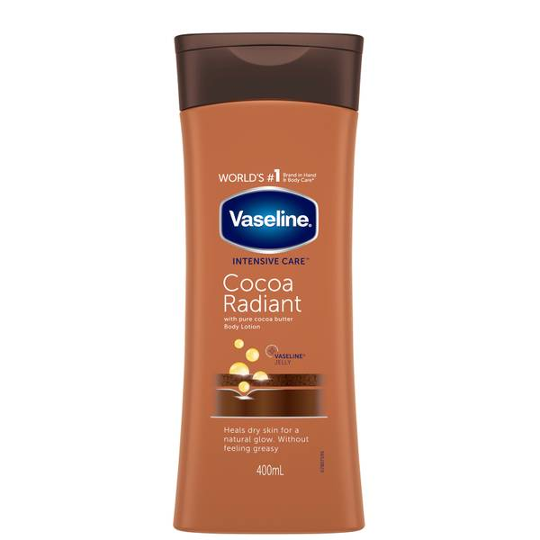
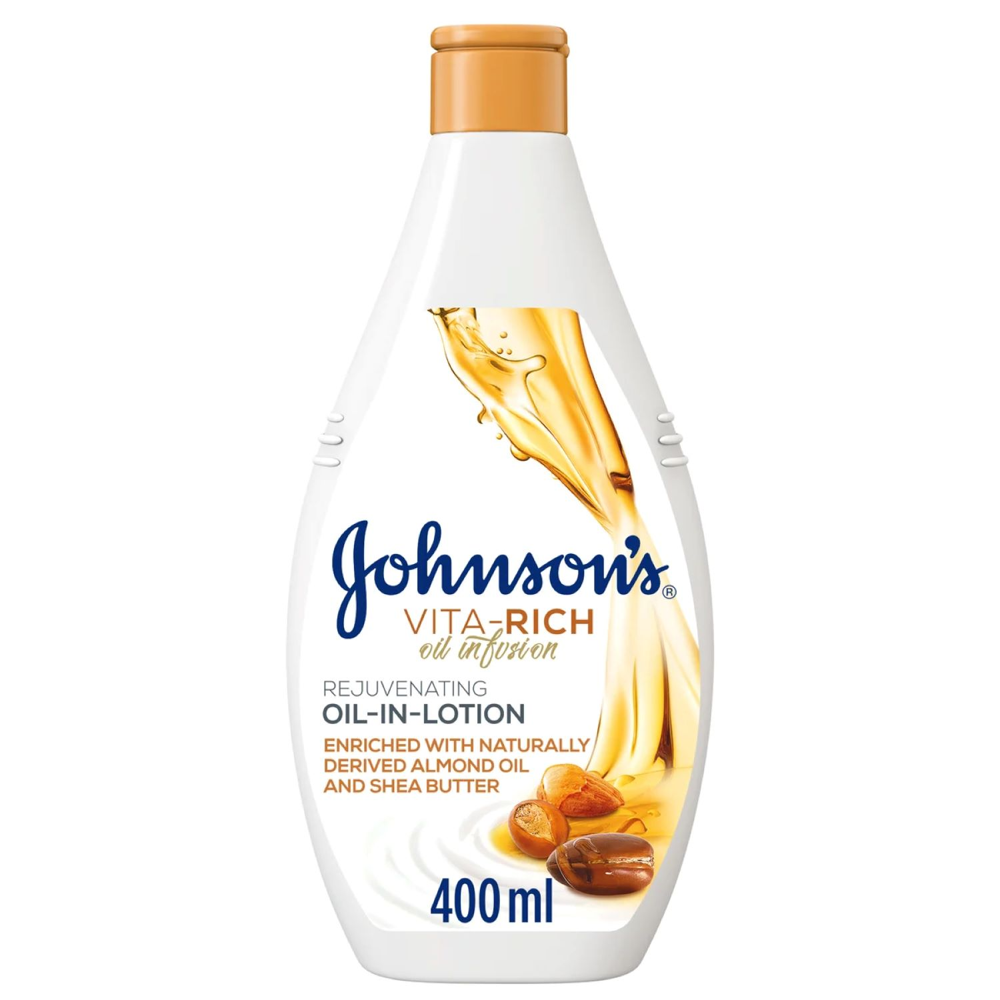

NIVEA Original Moisture Body Lotion with Vitamin E, Body Lotion for Dry Skin
48 Hour Moisture: This body lotion for dry skin provides 48 hours of deep nourishing moisture
Vitamin E Enriched: NIVEA Original Moisture Body Lotion is enriched with Deep Moisture Serum and Vitamin E, and intensively moisturizes the skin
Smooth Skin Fast: The creamy formula in this NIVEA body lotion softens and smoothes skin after just 1 application
Convenient Pump Bottle: Dry skin lotion pump bottle is a convenient option for home or office use
Includes one (1) 16.9 fluid ounce bottle of NIVEA Original Moisture Body Lotion

Vaseline Cocoa Butter Deep Conditioning Body Lotion
Vaseline Intensive Care Cocoa Radiant Body Lotion moisturizes dry skin to reveal its natural glow.
Vaseline Cocoa Radiant Body Lotion is made with pure Cocoa Butter, known to reveal the skin’s natural radiance.
Helps heal dry skin for glowing radiance with non-greasy, fast-absorbing rich moisturization.
Contains pure Cocoa Butter to moisturize dry skin and promote a natural glow.
Contains micro-droplets of Vaseline Jelly to lock in moisture.

Johnson's Cocoa Butter Body Lotion
is a non-greasy and fast-absorbing body lotion with long-lasting nourishm Enriched with a blend of naturally derived nut oils - almond oil, argan oil & shea butter, this nourishing, gentle oil-in-body lotion is infused with a rejuvenating fragrance that actively nourishes and softens the skin for 48-hour hydration.
JOHNSON’s Vita-Rich leaves your skin looking radiant, feeling velvety soft and smelling delicious.
For beautifully scented soft and velvety skin, use JOHNSON’s Vita-Rich Rejuvenating Oil-In-Lotion